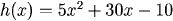

Changing the Form of Expressions
Completing the Square
We've already seen one way of changing the form of a quadratic, by factoring . This works especially well when a quadratic factors into a perfect square, as shown below.
If the quadratic isn't a perfect square, we can still rewrite it by completing the square to rewrite it in terms of a perfect square term and another one:
To do this, we must find the number n that we saw in the perfect square. Note that the coefficient of \(x\) there is two times \(n\). Therefore, we can find \(n\) by dividing the coefficient of the \(x\) term by 2. Once we know \(n\), we know that the constant term in the perfect square must be \(n\)-squared. This is the rule for completing the square, below.
Completing the Square:
To complete the square in the expression
divide the coefficient of \(x\) by two to get (b/2), then add and subtract this squared, and then factor it:
To complete the square for
first factor out \(a\) and then complete the square.
Note for each what the term b is, and how we add and subtract to get a perfect square.

In the form:



Factor out the 5:

Then complete the square:

Thus:

The Quadratic Formula
The quadratic formula, giving the general solution for the zeros of
with \(a\) not zero, is found by completing the square. Zeros are where \(r(x)=0\), so we have:
Then to complete the square we add and subtract \(\left(\frac{1}{2} \frac{b}{a}\right)^2 = \left(\frac{b}{2a}\right)^2 = \frac{b^2}{4a^2}\):
(the last term in this last step is because \(-\frac{b^2}{4a^2}+\frac{c}{a}=-\frac{b^2}{4a^2}+\frac{4ac}{4a^2} = -\frac{b^2-4ac}{4a^2}\). Then:
Practice
Question 2:
Return to Main